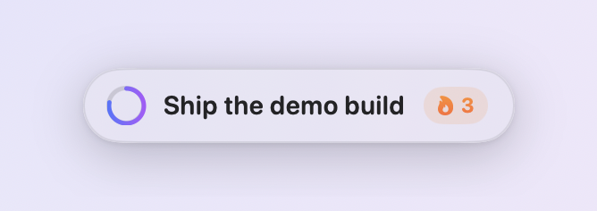
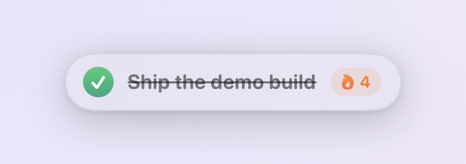
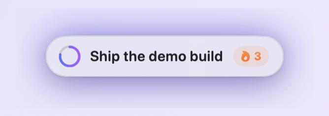
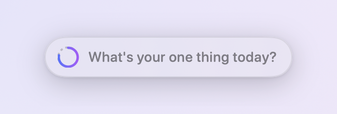

One goal.
Always in sight.
A 1 MB native pill that floats above every window, every Space, even full-screen apps. Set one thing each morning. It stays — and nudges, if you ask — until it’s done.
./build.sh --run
Four functions. Each one earns its place.
The day is the deadline.
The ring around the checkbox fills as your day passes — violet most of the day, amber under three hours, red in the final one.
No feeds, no badges. Just quiet pressure at the edge of your vision.

Finishing feels like something.
Click the ring: a spring-loaded check, an animated strikethrough, a burst of confetti, a soft pop. From day two, a 🔥 streak counts how long you’ve kept it up.
Un-check by mistake? Everything restores exactly — the streak only dies if you actually miss a day.

It nudges. You decide how often.
Pick a rhythm in the menu bar — every 30 minutes up to every 3 hours, or off. While the goal is open, the pill hops and glows violet to catch your eye, like it does at the top of this page.
Away from the Mac? The reminder becomes a notification instead, waiting when you come back. Done for the day means silence.

Every morning, a clean slate.
The day flips at 4 a.m., not midnight — a 1 a.m. finish still counts for the evening it belongs to.
Yesterday archives itself, and the empty pill breathes gently until you give it the next one thing.

The quiet details
- Never steals focus — type into it without leaving the app you’re in
- Fades when idle — dims to a whisper after 8 s, wakes on hover
- Drag it anywhere — the position is remembered
- Menu-bar glance — dashed circle → target → checkmark
- Reminders stay polite — they replace, never stack, and respect Focus modes
- Launch at login — one toggle, no daemon
- No accounts, no network — your data never leaves the Mac
Common questions.
Is the download safe to open?
Yes — releases are signed with an Apple Developer ID certificate and notarized by Apple, so macOS opens Daily Goal without any warnings. Prefer to see for yourself? It’s open source — build it in about ten seconds.
How do the reminders behave?
On the schedule you pick (default: every hour), while today’s goal is still open. At the Mac, the pill bounces and glows — no notification clutter. Away for a few minutes, and it posts one macOS notification that waits in Notification Center; a fresh reminder replaces the old one instead of stacking.
They honor Focus modes, go quiet the moment you finish, and Remind Me → Off in the menu bar turns them off entirely.
Where does my data live?
In UserDefaults on your Mac — the goal, the streak, and a 90-day history. There is no network code in the app at all, nothing to sign into, and no telemetry. Reminders are local notifications, generated on your Mac.
Why does the day end at 4 a.m.?
Because your day ends when you sleep, not when the calendar says so. Finish something at half past midnight and it still counts — the slate wipes while you’re in bed.
What does it cost?
Nothing, ever. It’s MIT-licensed open source — use it, fork it, ship your own.
Free forever.
Read the source.
About a thousand lines of Swift and SwiftUI — a non-activating panel, a state machine for logical days, and a lot of care about how 22 pixels of ring should feel.